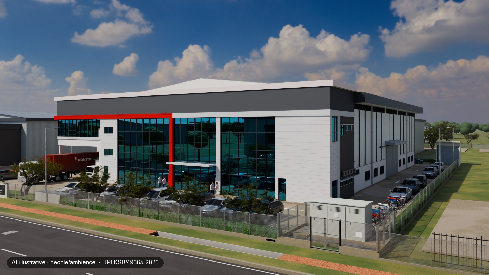

Ditopeng, kemudian digabungkan
Output model hanya digunakan di dalam topeng. Di luarnya, imej komposit sepadan dengan render asal piksel demi piksel; langkah pengkomposan kami menyemaknya sebelum label ditambah dan imej dimampatkan untuk web.
Ketelusan dan pelabelanPlan-checked by Idyra: maksudnyaHelaian 6 / 8
Model berasaskan lukisan, kelengkapan dalaman ilustratif, orang janaan AI, klip beranimasi AI, contoh konsep AI dan penyampai janaan AI ialah perkara yang berbeza. Setiap visual membawa label sumbernya supaya anda dapat membezakannya.
Contoh berasaskan lukisan
Pandangan siang PT 49665 yang sama: mengikut pelan, dengan kelengkapan dalaman yang dimodelkan, dan dengan orang janaan AI. PT 49665 ialah hartanah keluarga pengasas kami, bukan milik pelanggan berbayar, dan tidak ditawarkan untuk dijual atau disewa melalui Idyra.



Grafik dimensi, tindanan pelan dan bacaan ketik untuk mengukur dikira daripada model yang dibina berdasarkan lukisan. Dipaparkan kepada 0.1 m dan 1 m², bukan dalam sentimeter. Bukan ukur tanah.
Output jejak laluan cahaya atau 3D tanpa piksel AI. “Fit-out illustrative” ditambah apabila rak, barangan, perabot, peralatan atau kenderaan muncul, kerana semua itu tiada dalam lukisan.
Satu halaman, atau sebahagiannya, daripada PDF helaian spesifikasi kami. Setiap angka berasal daripada lukisan pelan bangunan dan merujuk helaiannya; angka terbitan, berskala dan dikira ditandakan demikian, dan jika lukisan tidak menyatakan sesuatu, ia ditulis “perlu disahkan oleh pemilik”. Pelan kuncinya dilukis semula daripada model kami: helaian ini ialah dokumen kami, bukan salinan lukisan, dan bukan ukur tanah.
Mana-mana imej dengan piksel janaan AI, walaupun dalam topeng. “People/ambience” ditambah jika itu sahaja yang diubah AI. Orang AI-illustrative ialah janaan dan tidak menggambarkan individu sebenar.
Klip pendek yang menggunakan AI untuk menambah gerakan pada salah satu render kami yang berasaskan lukisan: pergerakan kamera, cahaya, orang atau kenderaan. Bingkai pertama ialah render kami. Gerakan, orang dan kenderaan ialah ilustrasi; ukuran berasal daripada lukisan dan model, bukan daripada klip.
Imej janaan AI yang menunjukkan bagaimana jenis hartanah lain boleh dipersembahkan. Bukan bangunan sebenar, bukan dibina daripada lukisan dan bukan kerja pelanggan.
Penyampai janaan komputer, bukan orang sebenar, bertutur dengan suara sintetik pratetap daripada pustaka alat suara AI. Kami tidak mengklon suara sesiapa. Senarai label yang dituturkan hanya menyebut Measured, Rendered from building-plan drawings dan AI-illustrative; selain itu, ia hanya menyatakan perkara yang terdapat di laman ini. Video mempunyai sari kata dan transkripnya berada di bawahnya dalam bahagian “Siapa kami” pada halaman utama.
Render PT 49665
Dalam versi render berasaskan lukisan yang mempunyai orang janaan AI, kami menggabungkan orang janaan hanya dalam topeng pada kawasan bukan struktur. Dinding, tingkap, pintu, bukaan dan dimensi kekal tanpa perubahan.
Output model hanya digunakan di dalam topeng. Di luarnya, imej komposit sepadan dengan render asal piksel demi piksel; langkah pengkomposan kami menyemaknya sebelum label ditambah dan imej dimampatkan untuk web.
Bagi PT 49665, kesemua 20 output mentah daripada model imej telah mengubah bahagian imej di luar topeng. Tanpa topeng, perubahan itu akan masuk ke dalam imej akhir.
Rak, forklift dan perabot pejabat ialah model 3D yang ditempatkan dalam bangunan berskala, bukan dilukis oleh AI, dan semuanya berlabel ilustratif.
Klip beranimasi AI dan contoh konsep
Klip berulang pada halaman utama kami, dalam pandangan pembukaan dan tiga panel hartanah, ialah AI-animated. Model imej-ke-video bermula daripada render PT 49665 yang berasaskan lukisan, kemudian menambah pergerakan kamera dan suasana: cahaya, orang serta kenderaan. Setiap klip disemak terhadap render sumbernya, dan klip yang menambah atau mengubah apa-apa pada bangunan ditolak. Semuanya masih ilustrasi, berlabel AI-animated: gunakan model berasaskan lukisan dan ukurannya untuk menyemak geometri. Jika pengurangan gerakan atau penjimatan data diaktifkan, halaman memaparkan render berlabel. Filem lawatan tidak mempunyai babak beranimasi AI.
Contoh konsep pada halaman utama kami meliputi menara pejabat, suite pejabat dalam menara, unit runcit, kondominium, rumah bertanah dan bangunan bercampur.
Plan-checked by Idyra
Setiap ruang pameran menamakan set lukisan yang digunakan untuk membinanya. Inilah keterangan yang dipaparkan bersamanya:
Geometri model disemak oleh Idyra terhadap set lukisan pelan bangunan [rujukan] ([tarikh]; [status kelulusan]). Perabot, peralatan dan orang ialah ilustrasi (dimodelkan atau divisualkan oleh AI, seperti pada label). Bukan keadaan siap bina, bukan ukur tanah, dan bukan pensijilan atau kelulusan oleh mana-mana pihak berkuasa, arkitek atau jurutera.
Bagi PT 49665, keterangannya: set lukisan JPLKSB/49665-2026 (JUN 2026; telah dikemukakan, belum mendapat kelulusan).
Kami mentafsir lukisan menjadi model berskala dan menyemak model terhadap lukisan tersebut. Bagi PT 49665, 20 daripada 20 dimensi rawak berada dalam lingkungan 0.1 m; kesemua 103 semakan lulus (101 dimensi, 2 kiraan). Jika lukisan tidak menyatakan sesuatu, kami menulis “perlu disahkan oleh pemilik”.
Bahawa bangunan sepadan dengan lukisannya, lukisan telah mendapat kelulusan, atau sesuatu penggunaan dibenarkan. Idyra bukan pihak berkuasa, arkitek atau jurutera. Untuk membuat keputusan, sahkan di tapak serta melalui dokumen hak milik dan perancangan.
Lukisan dan data
Kami tidak pernah menerbitkan helaian lukisan atau blok tajuknya. Ruang pameran membawa model dan render kami, bukan fail lukisan. Kami memadamkannya atas permintaan.
Sebelum kami membina ruang pameran pelanggan, pemilik hak cipta lukisan (sering kali arkitek, jurutera atau perniagaan yang menempahnya) memberi lesen bertulis kepada kami, dan pemilik berdaftar memberi kebenaran bertulis untuk ruang pameran tersebut. Bagi kajian kes kami sendiri, hartanah keluarga pengasas kami, dokumen ini sedang diuruskan.
Halaman kami tidak menghantar apa-apa kepada kami: tiada borang yang menyerahkan data, tiada kuki dan tiada analitik. Model 3D mungkin mengingati pilihan warna dalam pelayar anda sendiri, dan hos web menyimpan log akses standard. Jika anda menghantar mesej melalui WhatsApp atau e-mel, kami menggunakan mesej itu hanya untuk membalas dan menyediakan perkara yang anda minta. Lihat notis privasi dalam Bahasa Melayu dan bahasa Inggeris.
Ceritakan tentang hartanah anda melalui WhatsApp dan sama ada anda mempunyai lukisannya. Kami akan cadangkan pakej yang sesuai. Jangan hantar lukisan sebelum borang pesanan ditandatangani.